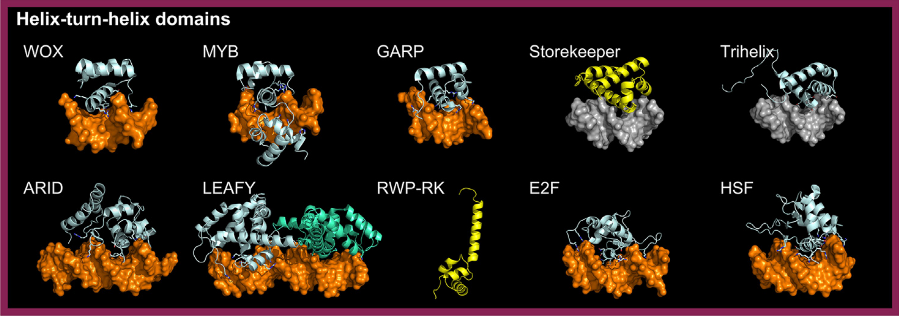

Transcription factors belonging to the HTH domain superclass recognize specific DNA sequences by inserting a "recognition" alpha-helix into the major groove.
This helix is followed by a turn and, in most cases, two additional alpha-helices arranged almost perpendicularly to it.
HTH DNA-binding domains (DBDs) often include an extra structural element, usually a loop, that projects basic residues into the minor groove, further enhancing sequence specificity.
